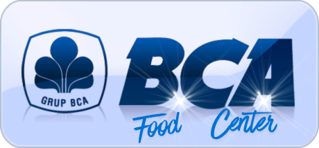
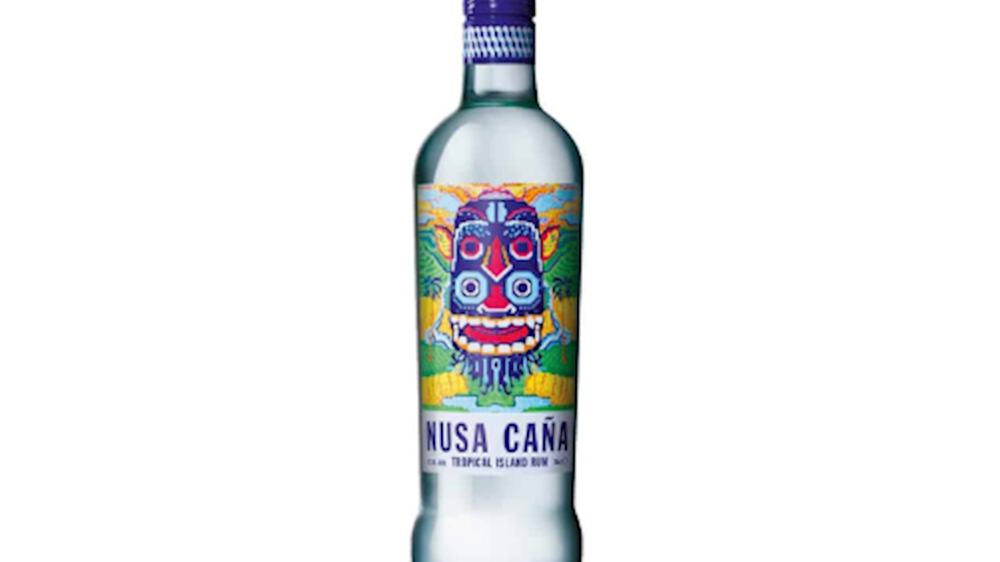
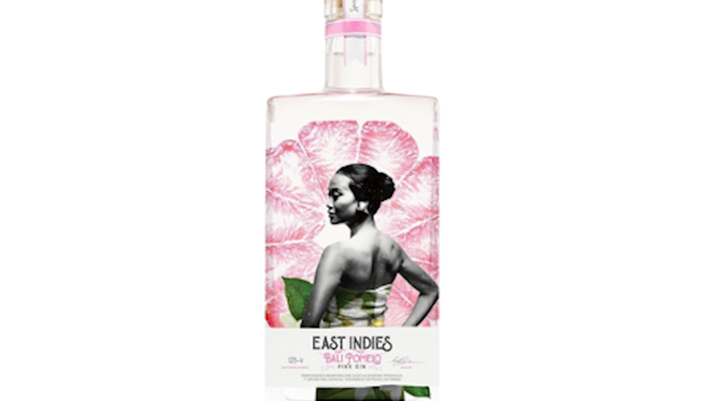
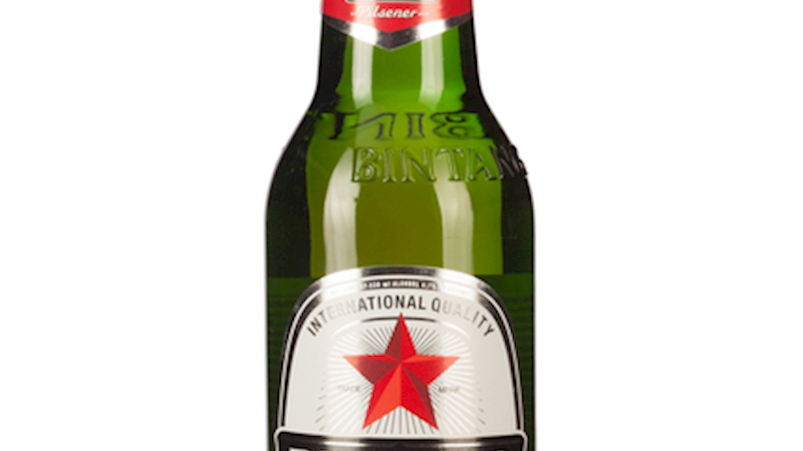
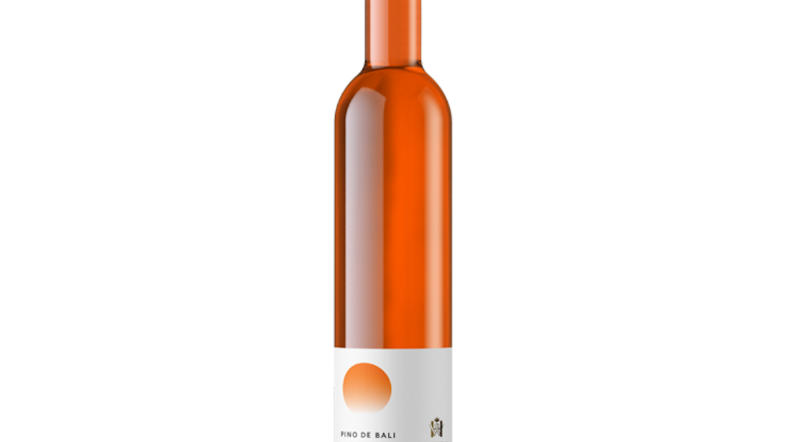
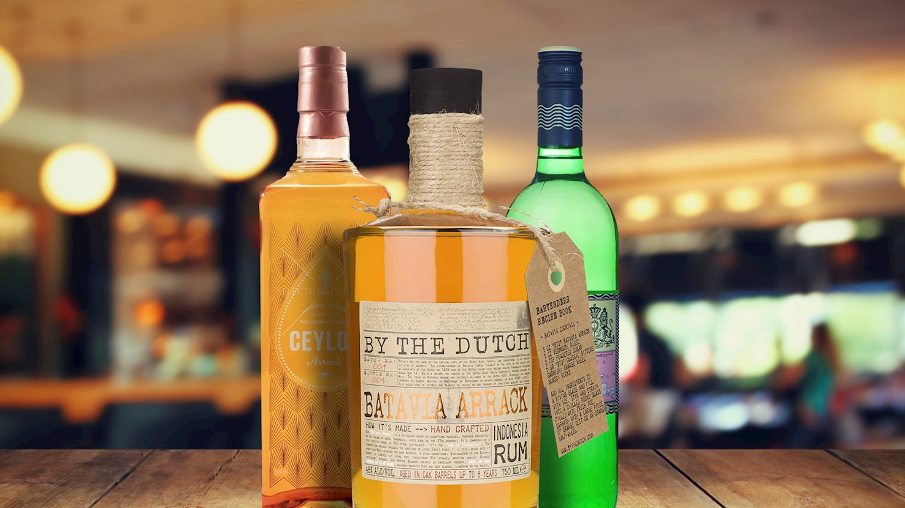
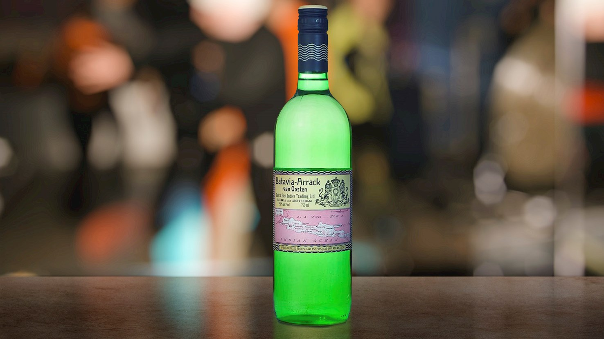

Indonesian rum brand that draws on the country’s long, largely forgotten rum-making heritage.
Rp 89.000

Craft distillery based in Bali that relies on local ingredients and traditional techniques to create spirits inspired by the richness of the Indonesian archipelago..
Rp 108.000

Known for it to pour a clear, straw-like color with a crisp, slightly sweet malt character and a clean, refreshing, and mildly bitter finish.
Rp 21.000

Kilang anggur dan perusahaan minuman beralkohol pertama di Bali, Indonesia, yang didirikan pada tahun 1994 oleh Ida Bagus Rai Budarsa.
Rp 55.000

Used for a variety of distilled spirits that are often unrelated and can be made from different ingredients.
Rp 96.000

It is produced from sugarcane molasses, red rice cakes, and occasionally small amounts of toddy (fermented palm juice).
Rp 89.000